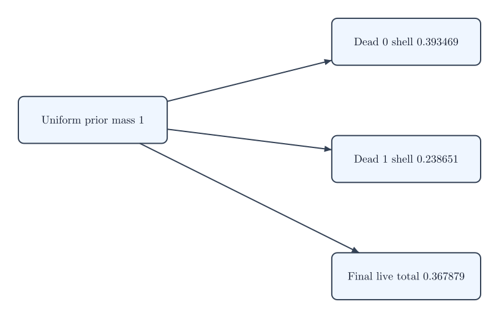
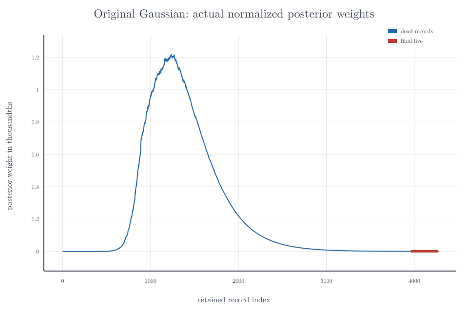
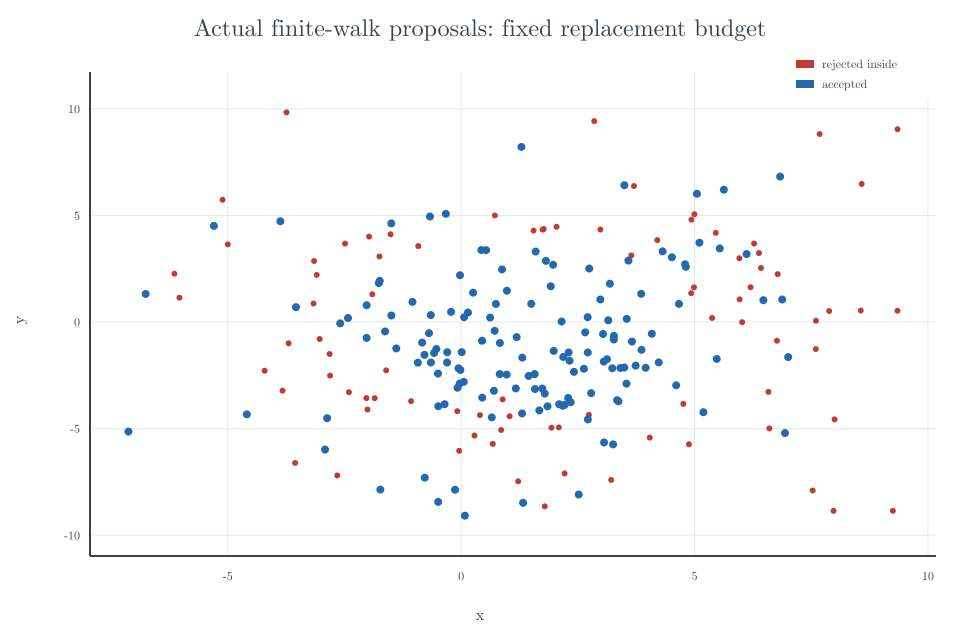
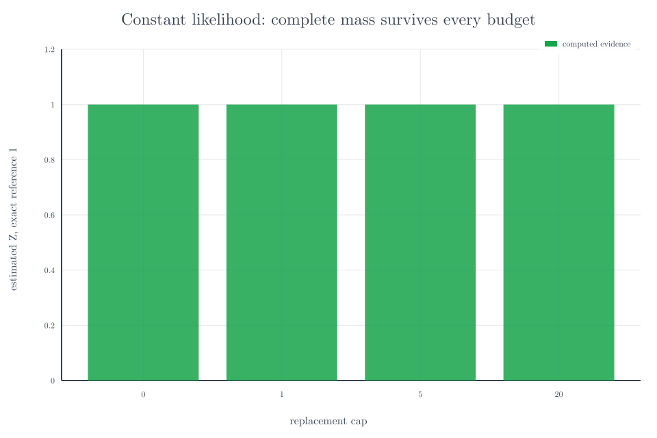
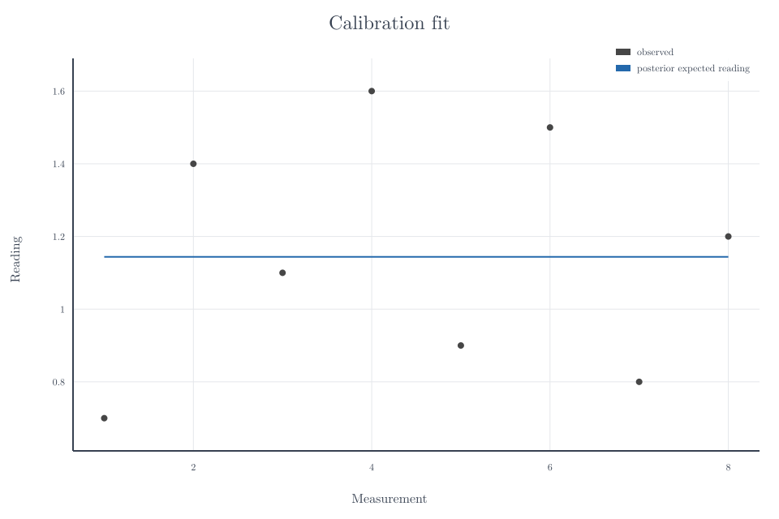

Nested sampling: evidence and weighted posteriors
Abstract
Estimate a likelihood averaged over a bounded uniform prior, while retaining weighted posterior records. We begin with a constant likelihood whose evidence is exactly known, then retain the original two-dimensional Gaussian experiment. Actual producer traces expose discarded shells, finite constrained walks and final live contributions, including a correction to the old remaining-mass accounting.
From prior mass to evidence
For likelihood L and normalized prior π, Z=∫L(θ)π(θ)dθ. Under suitable continuous likelihood contours, prior mass above level λ defines a decreasing X(λ), giving Z=∫₀¹L(X)dX. Ideal nested sampling repeatedly replaces the worst of N live points with an independent constrained-prior draw. The expected log shrinkage is−1/N; this implementation uses the deterministic schedule X_i=exp(−i/N), rather than sampling shrinkages.
Its finite Gaussian walk begins at a randomly selected surviving live point, proposes within the box and accepts only log likelihood strictly above the discarded threshold. A finite walk need not mix, and it may retain a tied starting survivor without any accepted move. These actual outcomes are recorded. Neither independent constrained draws nor reliable exploration of separated modes is guaranteed by this implementation.
Constant likelihood: the complete mass partition
With L=1, any normalized prior has Z=1. Each discarded point owns X_before−X_after, and all N final live points share the remaining X_final equally. Their masses must sum to one even at zero iterations. The original code incorrectly used the next discarded shell instead of X_final for final points. This lost almost all the remaining mass when N was large and was especially visible at zero iterations. The corrected producer uses log X_final−log N. Constant-likelihood walks accept no strict proposals; that plateau does not change the mass-accounting identity.
#include <dm/dm.hpp>
int main() {
std::filesystem::create_directories("build");
auto t = dm::algorithms::nested_sampling_trace([](const auto &) {
return 0.;
}, {0.}, {1.}, 2, 2, 7, 2, {1000, 0});
dm::graphics::Diagram d;
d.node("prior", {0, 0}, "Uniform prior mass 1");
std::print("| contribution | actual prior mass |\n| --- | ---: |\n");
double sum = 0;
for (std::size_t i = 0; i < t.iterations.size(); ++i) {
double mass = std::exp(t.iterations[i].log_shell);
sum += mass;
auto id = std::to_string(i);
d.node(id, {8, 2. - 3. * i},
std::format("Dead {} shell {:.6f}", i, mass));
d.edge("prior", id);
std::print("| dead {} | {} |\n", i, mass);
}
double final = 0;
for (auto &f : t.final_live)
final += std::exp(f.log_prior_weight);
sum += final;
d.node("final", {8, -4}, std::format("Final live total {:.6f}", final));
d.edge("prior", "final");
std::print("| final live total | {} |\n\nTotal mass {}; log evidence {}.\n",
final, sum, t.result.log_evidence);
d.save_svg("build/nested_tiny.svg");
}| contribution | actual prior mass |
|---|---|
| dead 0 | 0.3934693402873666 |
| dead 1 | 0.23865121854119112 |
| final live total | 0.3678794411714423 |
Total mass 1; log evidence -5.551115123125783e-17.

Retain the original Gaussian experiment
The original unnormalized likelihood is exp(−((x−2)²+(y+1)²)/2), with a uniform prior on[-10,10]². The original controls are N=300, replacement cap8000, seed7 and40 walk proposals. The finite-box reference integrates both coordinates using erf and divides by400. Replacing finite bounds by the whole plane yields log(2π/400), numerically extremely close here, but the native reference retains truncation.
The plot separates dead-point posterior weights from final-live weights, displayed in thousandths to keep the small values readable. These are correlated quadrature records with explicit normalized weights, not independent equal-weight posterior draws. The program computes their weighted mean and normalization directly. A single seeded result does not establish estimator coverage or convergence.
#include <dm/dm.hpp>
int main() {
std::filesystem::create_directories("build");
auto r =
dm::algorithms::nested_sampling(dm::algorithms::nested_sampling_demo_log_likelihood,
{-10., -10.}, {10., 10.}, 300, 8000, 7,
40);
std::vector<double> dx, dw, lx, lw;
double mass = 0, mx = 0, my = 0;
for (std::size_t i = 0; i < r.posterior_samples.size(); ++i) {
double w = std::exp(r.posterior_log_weights[i]);
mass += w;
mx += w * r.posterior_samples[i][0];
my += w * r.posterior_samples[i][1];
if (i < r.iterations) {
dx.push_back(i);
dw.push_back(1000 * w);
} else {
lx.push_back(i);
lw.push_back(1000 * w);
}
}
auto p = dm::graphics::RPlot::create();
p.lines(dx, dw, "dead records", {36, 105, 172}).points(lx, lw, "final live",
{192, 59, 50}, 2).title("Original Gaussian: actual normalized posterior weights").x_label("retained record index").y_label("posterior weight in thousandths").save_svg("build/nested_original.svg");
std::print("| iterations | retained records | log evidence | finite-box reference | heuristic sqrt(H/N) " "| information | weight sum | weighted mean x | weighted mean y |\n| ---: | ---: | ---: | " "---: | ---: | ---: | ---: | ---: | ---: |\n| {} | {} | {} | {} | {} | {} | {} | {} | {} |\n",
r.iterations, r.posterior_samples.size(), r.log_evidence,
dm::algorithms::nested_sampling_demo_log_evidence(),
r.log_evidence_error, r.information, mass, mx, my);
}| iterations | retained records | log evidence | finite-box reference | heuristic sqrt(H/N) | information | weight sum | weighted mean x | weighted mean y |
|---|---|---|---|---|---|---|---|---|
| 3965 | 4265 | -4.003723167956392 | -4.153587480698637 | 0.10026777693744117 | 3.016088127592938 | 0.9999999999999308 | 1.9811613311980927 | -1.0011612928736444 |

Inspect actual walk decisions and the stopping heuristic
A smaller run makes the walk visible. Outside-box proposals skip the likelihood callback. Inside proposals evaluate it and are accepted only above the actual discarded threshold. Every proposal, acceptance count, surviving seed index, old/new step scale and replacement is captured by the same producer. Scales multiply by1.1 above50% acceptance and by0.9 otherwise, retaining the original adaptation schedule.
After replacement, the stopping statistic is max observed live log likelihood+log X_final−log Z_dead. It compares with log(10⁻⁴) by default. The maximum observed live likelihood is not a proven maximum over undiscovered regions, so this is a remaining-evidence heuristic rather than a rigorous bound. Unlike the original code, it uses remaining mass rather than shell mass. Zero remaining_fraction disables it for a fixed-budget diagnostic.
#include <dm/dm.hpp>
int main() {
std::filesystem::create_directories("build");
auto t =
dm::algorithms::nested_sampling_trace(dm::algorithms::nested_sampling_demo_log_likelihood,
{-10., -10.}, {10., 10.}, 10, 30,
7, 8, {100000, 0});
std::vector<double> ax, ay, rx, ry;
std::size_t outside = 0, tied = 0;
for (auto &q : t.proposals) {
if (!q.in_box) {
++outside;
continue;
}
if (q.accepted) {
ax.push_back(q.point[0]);
ay.push_back(q.point[1]);
} else {
rx.push_back(q.point[0]);
ry.push_back(q.point[1]);
}
}
for (auto &r : t.iterations)
tied += !r.strict_replacement;
auto p = dm::graphics::RPlot::create();
p.points(rx, ry, "rejected inside", {192, 59, 50}, 3).points(ax, ay,
"accepted",
{36, 105, 172},
4).title(
"Actual finite-walk proposals: fixed replacement budget").x_label(
"x").y_label("y").save_svg("build/nested_walk.svg");
std::print("{} actual proposals; {} outside; {} callbacks; {} replacements not strictly above " "threshold.\n",
t.proposals.size(), outside, t.likelihood_calls, tied);
}240 actual proposals; 10 outside; 240 callbacks; 0 replacements not strictly above threshold.

Zero iterations, zero likelihood and guards
At zero iterations the estimate is the ordinary prior Monte Carlo mean of the N likelihood values. Constant likelihood must therefore be integrated exactly up to rounding for every tested budget. A callback may return negative infinity to denote zero likelihood; if every retained contribution is zero, log evidence and every log posterior weight are negative infinity. There is then no normalized posterior. NaN and positive infinity are rejected.
All bounds are checked for nonempty equal shape, finite endpoints and finite positive widths; at least two live points and one walk proposal are required. Complete geometry is checked before callbacks. Trace admission counts2d+6 initial bound/control units,1+d per initial/proposal/final record,1+4d per iteration and2+d per returned posterior record. Its default quota is1000000, zero disables; online failure returns no partial result, but earlier callback side effects remain. Ordinary production has no trace quota.
#include <dm/dm.hpp>
int main() {
std::filesystem::create_directories("build");
std::vector<std::string> labels;
std::vector<double> z;
std::print("| replacement budget | actual log evidence for constant L=1 | actual retained points |\n| " "---: | ---: | ---: |\n");
for (std::size_t budget : {0, 1, 5, 20}) {
auto t = dm::algorithms::nested_sampling_trace([](const auto &) {
return 0.;
}, {0.}, {1.}, 10, budget, 7, 2, {10000, 0});
labels.push_back(std::to_string(budget));
z.push_back(std::exp(t.result.log_evidence));
std::print("| {} | {} | {} |\n", budget, t.result.log_evidence,
t.result.posterior_samples.size());
}
auto p = dm::graphics::RPlot::barplot(z, labels, "computed evidence");
p.title("Constant likelihood: complete mass survives every budget").x_label(
"replacement cap").y_label("estimated Z, exact reference 1").y_limits(
0, 1.2).save_svg("build/nested_controls.svg");
auto zero = dm::algorithms::nested_sampling_trace([](const auto &) {
return -std::numeric_limits<double>::infinity();
}, {0.}, {1.}, 2, 0);
std::print("\nAll-zero likelihood: zero-evidence status {}, log Z {}.\n",
zero.zero_evidence, zero.result.log_evidence);
}| replacement budget | actual log evidence for constant L=1 | actual retained points |
|---|---|---|
| 0 | -2.220446049250313e-16 | 10 |
| 1 | -2.3592239273284576e-16 | 11 |
| 5 | -4.163336342344337e-17 | 15 |
| 20 | -2.6020852139652106e-17 | 30 |
All-zero likelihood: zero-evidence status true, log Z -inf.

Fit a shared mean to calibration data
These eight synthetic readings have known observation SD 0.5. The model uses a Uniform(−4, 4) prior on a common mean. Each reading contributes a normalized Normal log likelihood. The nested posterior draws are weighted when computing the fitted mean. Grid quadrature fits the same observations and checks that mean and the evidence on the same prior support.
#include <dm/dm.hpp>
namespace b = datamunge::bayes;
int main() {
const std::vector<double> readings{0.7, 1.4, 1.1, 1.6, 0.9, 1.5, 0.8, 1.2};
const auto likelihood = [&](const std::vector<double>& q) {
double lp = 0;
for (double value : readings) lp += b::normal_lpdf(value, q[0], 0.5);
return lp;
};
const auto nested = datamunge::algorithms::nested_sampling(likelihood, {-4.}, {4.}, 300, 4500, 7, 24);
double fitted = 0;
for (std::size_t i = 0; i < nested.posterior_samples.size(); ++i)
fitted += std::exp(nested.posterior_log_weights[i]) * nested.posterior_samples[i][0];
b::LogDensity target([&](const auto& q) { return likelihood(q) - std::log(8.); });
const auto reference = b::grid_posterior(target, {-4.}, {4.}, 1000);
if (std::abs(fitted - reference.mean[0]) > 0.08)
throw std::runtime_error("Nested fit differs from grid reference");
std::print("Fitted mean {:.3f} (grid {:.3f}). Log evidence {:.3f} (grid {:.3f}).\n",
fitted, reference.mean[0], nested.log_evidence, reference.log_evidence);
std::vector<double> index(readings.size());
std::iota(index.begin(), index.end(), 1.);
std::filesystem::create_directories("build");
datamunge::graphics::RPlot::create().points(index, readings, "observed", {70, 70, 70})
.lines({index.front(), index.back()}, {fitted, fitted}, "posterior expected reading", {36, 105, 172})
.title("Calibration fit").x_label("Measurement").y_label("Reading")
.save_svg("build/nested_calibration.svg");
}Fitted mean 1.144 (grid 1.150). Log evidence -6.316 (grid -6.260).

Cost and interpretation
For dimension d, N live points, I replacements and W walk proposals, producer work is O(Nd+I(N+Wd)), plus actual likelihood costs; linear worst-point scans are included. Live/result storage is O((N+I)d). An owned proposal trace additionally scales with IWd, so the quota measures logical history rather than peak process memory. Callback cost and poor finite-walk mixing can dominate.
Information is recomputed from every normalized dead and final-live weight as Σw(log L−log Z), then clipped at zero for the returned heuristic sqrt(H/N). This corrects the old omission of final points and the first discarded contribution. The approximation and finite walk can bias both evidence and the diagnostic. We retain the original Gaussian comparison while removing the old assertion that one estimate lying within a displayed uncertainty validates that uncertainty.
Skilling (2006), Nested sampling for general Bayesian computation describes the method and its ideal sampling assumptions. These assumptions explain why the recorded mass identity is a precise accounting check while Gaussian accuracy and finite-walk performance require empirical assessment.
Verification
This ten-report batch passes76 CTest cases,22 directly instrumented ASan/UBSan
cases,119 compiled and executed public examples,513/513 scoped documentation
definitions and ten representative clangd hovers. Independent Python Fraction
arithmetic and likelihood/mass reconstruction verify5266 captured records
with43990 checks, including the original Gaussian controls. Frozen valid-input
comparisons cover DFA quotients, byte recoding, event streams, interpolation,
tours, alignments, real-root paths, packing and nested-sampling trajectories.
Ten checkout headers and ten byte-identical installed development headers
compile independently; an installed-header native consumer links and runs. The
batch has42 executed complete programs and42 visually reviewed native figures,
with HTML/Markdown result and image-byte checks. These are scoped native checks,
not an installation claim for every language binding. Receipts:
build/mepml-conversion/batch-244-253/.